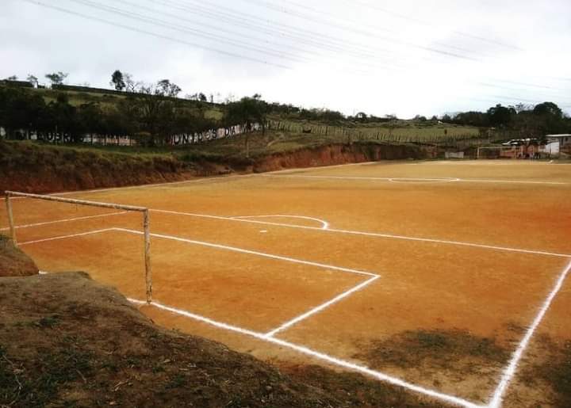
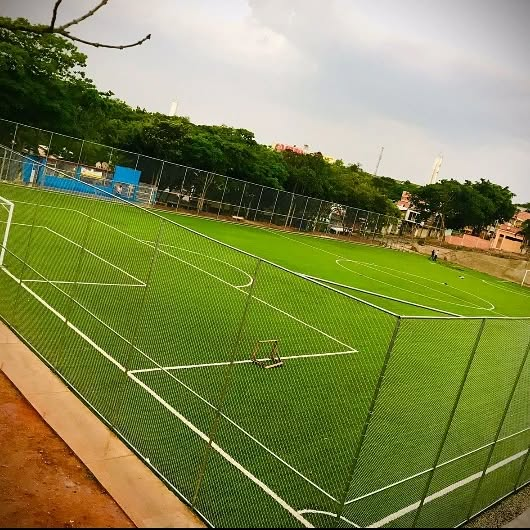

Sobre o Unidos da Vila Fundado em 1992, o Unidos da Vila é um time que representa a paixão e a força da comunidade, unindo pessoas de diferentes origens e histórias através do esporte. Desde o seu surgimento, o time tem se destacado não apenas pelos resultados dentro de campo, mas também pela dedicação, espírito de equipe e pela constante busca pela excelência. Com uma história marcada por desafios e conquistas, o Unidos da Vila é mais do que apenas um time de futebol. Ele é um símbolo de união, amizade e esforço coletivo. Ao longo dos anos, o time construiu uma identidade forte, conquistando o respeito e a admiração tanto de seus torcedores quanto dos adversários. O compromisso com o desenvolvimento de jovens talentos e a promoção do esporte na comunidade é uma das principais bandeiras do Unidos da Vila. A cada temporada, o time segue crescendo, mantendo-se fiel aos seus valores e ao seu objetivo: ser um espaço de inclusão, superação e, acima de tudo, união.
Campeão Copa Verona 2024/2025 💙🤍
ANTES
DEPOIS
| Ano | Competição | Posição |
|---|---|---|
| 2024/2025 | Copa Verona | Campeão 🏆 |
| 2022 | Taça Vila União | Vice-Campeão |
| 2019 | Copa Amigos da Bola | 3º Lugar |